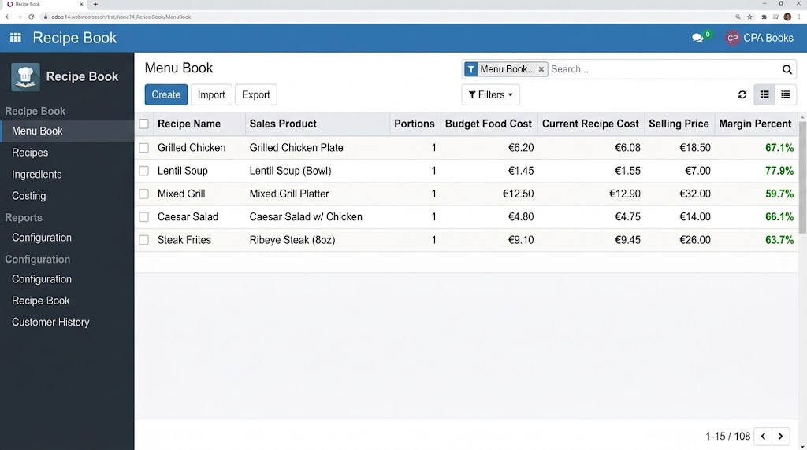
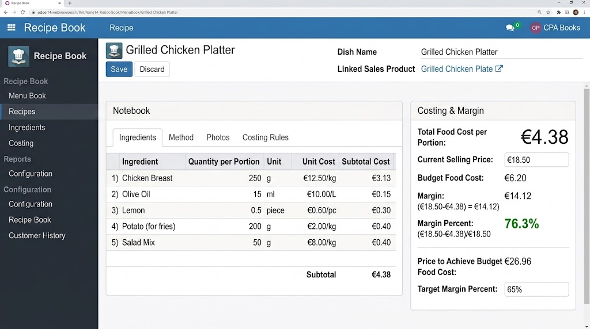
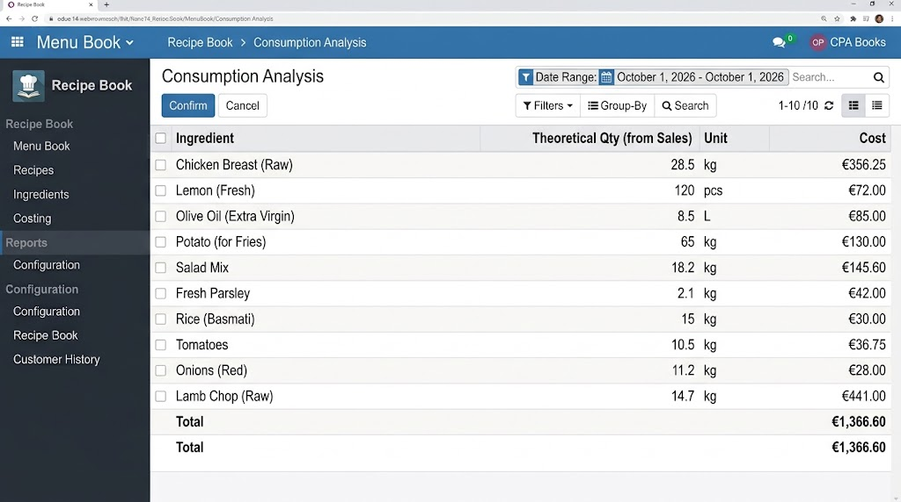
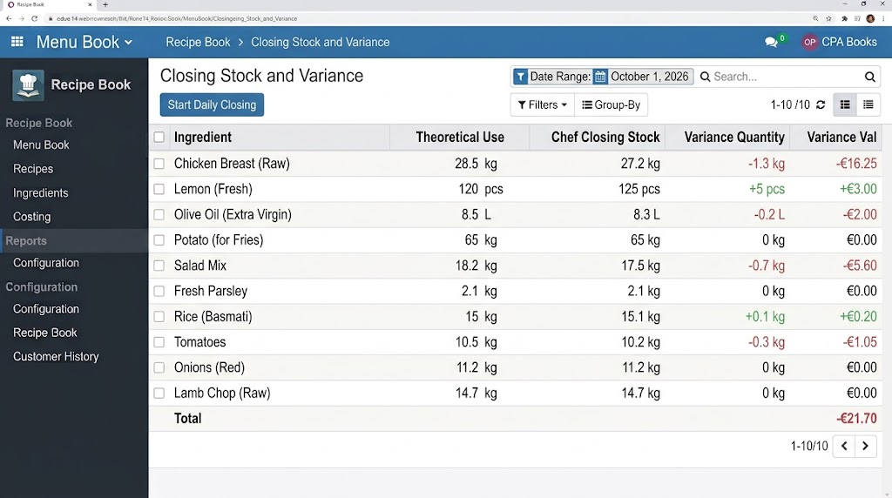
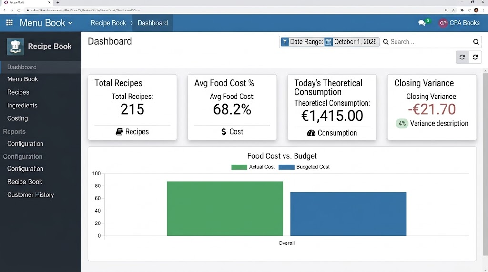

<div style="font-family:-apple-system,BlinkMacSystemFont,'Segoe UI',Roboto,Helvetica,Arial,sans-serif;color:#14213D;background-color:#FFFFFF;padding:8px 4px 20px;line-height:1.5;">
<div style="max-width:1080px;margin:0 auto;">

<div style="background-color:#EAF3FF;border:1px solid #D5E4F7;padding:22px 18px 18px;margin:0 0 16px;">
  <div style="margin:0 0 14px;">
    <span style="display:inline-block;vertical-align:middle;margin-right:12px;"><span style="display:inline-block;vertical-align:middle;"><span style="display:inline-block;background:#FFFFFF;border-radius:12px;padding:8px 8px 6px;margin-right:10px;line-height:0;vertical-align:middle;box-shadow:0 6px 16px rgba(16,42,82,0.12);"><span style="display:inline-block;width:6px;height:10px;background:#34D399;border-radius:3px;margin:0 1px;vertical-align:bottom;"></span><span style="display:inline-block;width:6px;height:16px;background:#22C55E;border-radius:3px;margin:0 1px;vertical-align:bottom;"></span><span style="display:inline-block;width:6px;height:22px;background:#3B82F6;border-radius:3px;margin:0 1px;vertical-align:bottom;"></span><span style="display:inline-block;width:6px;height:28px;background:#1D4ED8;border-radius:3px;margin:0 1px;vertical-align:bottom;"></span></span><span style="display:inline-block;vertical-align:middle;text-align:left;"><span style="display:block;font-weight:800;font-size:16px;color:#102A52;letter-spacing:-0.02em;line-height:1.1;">CPA Books</span><span style="display:block;font-size:11px;color:#5C6B86;margin-top:2px;">Smart Accounting for a Smarter Business</span></span></span></span>
    <span style="display:inline-block;vertical-align:middle;"><span style="display:inline-block;background-color:#102A52;color:#FFFFFF;border-radius:999px;padding:7px 8px 7px 14px;font-size:12px;font-weight:700;vertical-align:middle;">Built for odoo <span style="display:inline-block;background-color:#714B67;color:#FFFFFF;border-radius:7px;padding:2px 8px;margin-left:4px;">14</span></span></span>
  </div>
  <div style="font-size:0;">
    <div style="display:inline-block;width:48%;min-width:280px;vertical-align:top;font-size:16px;text-align:left;padding:6px 12px 6px 0;box-sizing:border-box;">
      <div style="font-size:12px;font-weight:800;letter-spacing:0.14em;text-transform:uppercase;color:#2166C1;margin-bottom:8px;">Restaurant management</div>
      <h1 style="font-size:36px;line-height:1.1;font-weight:800;margin:0 0 10px;color:#102A52;letter-spacing:-0.03em;">Recipe Book</h1>
      <p style="font-size:16px;line-height:1.6;color:#14213D;margin:0 0 16px;max-width:460px;">Menu items, food cost and chef stock in one place. Each dish is linked to a sales product, with ingredients stored per portion.</p>
      <div style="margin:0 0 8px;"><span style="display:inline-block;width:22px;height:22px;line-height:22px;text-align:center;border-radius:7px;background-color:#22C55E;color:#FFFFFF;font-size:12px;font-weight:800;margin-right:8px;vertical-align:middle;">&#10003;</span><span style="color:#14213D;font-size:14px;font-weight:700;vertical-align:middle;">All recipes in one list</span></div><div style="margin:0 0 8px;"><span style="display:inline-block;width:22px;height:22px;line-height:22px;text-align:center;border-radius:7px;background-color:#3B82F6;color:#FFFFFF;font-size:12px;font-weight:800;margin-right:8px;vertical-align:middle;">&#10003;</span><span style="color:#14213D;font-size:14px;font-weight:700;vertical-align:middle;">Ingredients and margin on the recipe</span></div><div style="margin:0 0 8px;"><span style="display:inline-block;width:22px;height:22px;line-height:22px;text-align:center;border-radius:7px;background-color:#8B5CF6;color:#FFFFFF;font-size:12px;font-weight:800;margin-right:8px;vertical-align:middle;">&#10003;</span><span style="color:#14213D;font-size:14px;font-weight:700;vertical-align:middle;">Theoretical use from sales</span></div><div style="margin:0 0 8px;"><span style="display:inline-block;width:22px;height:22px;line-height:22px;text-align:center;border-radius:7px;background-color:#F59E0B;color:#FFFFFF;font-size:12px;font-weight:800;margin-right:8px;vertical-align:middle;">&#10003;</span><span style="color:#14213D;font-size:14px;font-weight:700;vertical-align:middle;">Chef closing stock and variance</span></div><div style="margin:0 0 8px;"><span style="display:inline-block;width:22px;height:22px;line-height:22px;text-align:center;border-radius:7px;background-color:#14B8A6;color:#FFFFFF;font-size:12px;font-weight:800;margin-right:8px;vertical-align:middle;">&#10003;</span><span style="color:#14213D;font-size:14px;font-weight:700;vertical-align:middle;">Food cost on the dashboard</span></div>
    </div>
    <div style="display:inline-block;width:50%;min-width:280px;vertical-align:top;font-size:16px;text-align:left;box-sizing:border-box;">
      <div style="background-color:#FFFFFF;border:1px solid #D5E4F7;border-radius:16px;padding:22px 18px 12px;">
        <div style="font-size:11px;font-weight:800;letter-spacing:0.12em;text-transform:uppercase;color:#2166C1;">Menu book</div>
        <h2 style="font-size:28px;line-height:1.15;font-weight:800;margin:8px 0 8px;color:#102A52;">All recipes in <span style="color:#2166C1;">one list</span></h2>
        <p style="font-size:14px;line-height:1.6;color:#14213D;margin:0 0 14px;">Menu Book shows each dish, its sales product, portions, food cost, selling price and margin.</p>
        <div style="font-size:0;"><div style="display:inline-block;width:48%;min-width:180px;vertical-align:top;box-sizing:border-box;padding:4px 6px;font-size:14px;"><div style="margin:0 0 14px;text-align:left;"><span style="display:inline-block;width:40px;height:40px;line-height:40px;text-align:center;border-radius:12px;background:#DCFCE7;font-size:16px;margin-right:10px;vertical-align:middle;"><span style="display:inline-block;width:16px;vertical-align:middle;"><span style="display:block;height:2px;background:#15803D;border-radius:2px;margin:3px 0;"></span><span style="display:block;height:2px;background:#15803D;border-radius:2px;margin:3px 0;"></span><span style="display:block;height:2px;background:#15803D;border-radius:2px;margin:3px 0;"></span></span></span><span style="display:inline-block;vertical-align:middle;max-width:250px;"><span style="display:block;font-weight:800;color:#14213D;font-size:14px;line-height:1.3;">Complete recipe list</span><span style="display:block;color:#52627A;font-size:12px;line-height:1.45;margin-top:2px;">See menu items with the costing columns.</span></span></div></div><div style="display:inline-block;width:48%;min-width:180px;vertical-align:top;box-sizing:border-box;padding:4px 6px;font-size:14px;"><div style="margin:0 0 14px;text-align:left;"><span style="display:inline-block;width:40px;height:40px;line-height:40px;text-align:center;border-radius:12px;background:#DBEAFE;font-size:16px;margin-right:10px;vertical-align:middle;"><span style="display:inline-block;width:14px;height:14px;border:2px solid #1D4ED8;border-radius:14px;vertical-align:middle;box-sizing:border-box;"></span></span><span style="display:inline-block;vertical-align:middle;max-width:250px;"><span style="display:block;font-weight:800;color:#14213D;font-size:14px;line-height:1.3;">Food cost and margin</span><span style="display:block;color:#52627A;font-size:12px;line-height:1.45;margin-top:2px;">Budget cost, current cost, price and margin.</span></span></div></div><div style="display:inline-block;width:48%;min-width:180px;vertical-align:top;box-sizing:border-box;padding:4px 6px;font-size:14px;"><div style="margin:0 0 14px;text-align:left;"><span style="display:inline-block;width:40px;height:40px;line-height:40px;text-align:center;border-radius:12px;background:#EDE9FE;font-size:16px;margin-right:10px;vertical-align:middle;"><span style="display:inline-block;width:8px;height:8px;border:2px solid #6D28D9;border-radius:8px;vertical-align:middle;"></span><span style="display:inline-block;width:8px;height:2px;background:#6D28D9;vertical-align:middle;"></span><span style="display:inline-block;width:8px;height:8px;border:2px solid #6D28D9;border-radius:8px;vertical-align:middle;"></span></span><span style="display:inline-block;vertical-align:middle;max-width:250px;"><span style="display:block;font-weight:800;color:#14213D;font-size:14px;line-height:1.3;">Link with sales product</span><span style="display:block;color:#52627A;font-size:12px;line-height:1.45;margin-top:2px;">Each recipe is tied to the item you sell.</span></span></div></div><div style="display:inline-block;width:48%;min-width:180px;vertical-align:top;box-sizing:border-box;padding:4px 6px;font-size:14px;"><div style="margin:0 0 14px;text-align:left;"><span style="display:inline-block;width:40px;height:40px;line-height:40px;text-align:center;border-radius:12px;background:#FFEDD5;font-size:16px;margin-right:10px;vertical-align:middle;"><span style="color:#C2410C;font-size:15px;font-weight:800;line-height:1;">&#9998;</span></span><span style="display:inline-block;vertical-align:middle;max-width:250px;"><span style="display:block;font-weight:800;color:#14213D;font-size:14px;line-height:1.3;">Easy to manage</span><span style="display:block;color:#52627A;font-size:12px;line-height:1.45;margin-top:2px;">Create, edit and organise recipes.</span></span></div></div></div>
        <div style="margin-top:8px;">
          <a href="https://www.cpabooks.org/contactus" style="display:inline-block;background-color:#2166C1;color:#FFFFFF;text-decoration:none;font-weight:800;font-size:14px;border-radius:999px;padding:11px 18px;">Contact CPA Books &#8594;</a>
        </div>
      </div>
    </div>
  </div>
  <div style="text-align:center;color:#2166C1;font-size:12px;font-weight:800;letter-spacing:0.16em;margin-top:14px;">SIMPLE  ·  FLEXIBLE  ·  ACCURATE</div>
</div>

<table width="100%" cellpadding="0" cellspacing="0" style="background-color:#EAF3FF;border:1px solid #D5E4F7;border-collapse:separate;border-spacing:0;margin:0 0 16px;"><tr><td width="50%" valign="middle" style="background-color:#EAF3FF;padding:22px 16px;"><div style="background:#FFFFFF;border:1px solid #E3ECF8;border-radius:18px;padding:8px;box-shadow:0 18px 42px rgba(16,42,82,0.16);"></div></td><td width="50%" valign="middle" style="background-color:#EAF3FF;padding:22px 16px;"><div style="padding:8px 6px;"><div style="font-size:11px;font-weight:800;letter-spacing:0.12em;text-transform:uppercase;color:#2166C1;margin-bottom:8px;">Restaurant management</div><div style="margin:0 0 12px;line-height:1;"><span style="display:inline-block;width:7px;height:7px;border-radius:7px;background:#2166C1;margin-right:5px;"></span><span style="display:inline-block;width:7px;height:7px;border-radius:7px;background:#60A5FA;margin-right:5px;"></span><span style="display:inline-block;width:7px;height:7px;border-radius:7px;background:#DBEAFE;margin-right:5px;"></span></div><h2 style="font-size:30px;line-height:1.15;font-weight:800;margin:0 0 12px;color:#102A52;letter-spacing:-0.02em;">All recipes in<br/><span style="color:#2166C1;">one list</span></h2><p style="font-size:15px;line-height:1.65;color:#14213D;margin:0 0 16px;">Menu Book shows each dish, its sales product, portions, food cost, selling price and margin.</p><div style="margin:0 0 14px;text-align:left;"><span style="display:inline-block;width:40px;height:40px;line-height:40px;text-align:center;border-radius:12px;background:#DCFCE7;font-size:16px;margin-right:10px;vertical-align:middle;"><span style="display:inline-block;width:16px;vertical-align:middle;"><span style="display:block;height:2px;background:#15803D;border-radius:2px;margin:3px 0;"></span><span style="display:block;height:2px;background:#15803D;border-radius:2px;margin:3px 0;"></span><span style="display:block;height:2px;background:#15803D;border-radius:2px;margin:3px 0;"></span></span></span><span style="display:inline-block;vertical-align:middle;max-width:250px;"><span style="display:block;font-weight:800;color:#14213D;font-size:14px;line-height:1.3;">Complete recipe list</span><span style="display:block;color:#52627A;font-size:12px;line-height:1.45;margin-top:2px;">See menu items with the costing columns.</span></span></div><div style="margin:0 0 14px;text-align:left;"><span style="display:inline-block;width:40px;height:40px;line-height:40px;text-align:center;border-radius:12px;background:#DBEAFE;font-size:16px;margin-right:10px;vertical-align:middle;"><span style="display:inline-block;width:14px;height:14px;border:2px solid #1D4ED8;border-radius:14px;vertical-align:middle;box-sizing:border-box;"></span></span><span style="display:inline-block;vertical-align:middle;max-width:250px;"><span style="display:block;font-weight:800;color:#14213D;font-size:14px;line-height:1.3;">Food cost and margin</span><span style="display:block;color:#52627A;font-size:12px;line-height:1.45;margin-top:2px;">Budget cost, current cost, price and margin.</span></span></div><div style="margin:0 0 14px;text-align:left;"><span style="display:inline-block;width:40px;height:40px;line-height:40px;text-align:center;border-radius:12px;background:#EDE9FE;font-size:16px;margin-right:10px;vertical-align:middle;"><span style="display:inline-block;width:8px;height:8px;border:2px solid #6D28D9;border-radius:8px;vertical-align:middle;"></span><span style="display:inline-block;width:8px;height:2px;background:#6D28D9;vertical-align:middle;"></span><span style="display:inline-block;width:8px;height:8px;border:2px solid #6D28D9;border-radius:8px;vertical-align:middle;"></span></span><span style="display:inline-block;vertical-align:middle;max-width:250px;"><span style="display:block;font-weight:800;color:#14213D;font-size:14px;line-height:1.3;">Link with sales product</span><span style="display:block;color:#52627A;font-size:12px;line-height:1.45;margin-top:2px;">Each recipe is tied to the item you sell.</span></span></div><div style="margin:0 0 14px;text-align:left;"><span style="display:inline-block;width:40px;height:40px;line-height:40px;text-align:center;border-radius:12px;background:#FFEDD5;font-size:16px;margin-right:10px;vertical-align:middle;"><span style="color:#C2410C;font-size:15px;font-weight:800;line-height:1;">&#9998;</span></span><span style="display:inline-block;vertical-align:middle;max-width:250px;"><span style="display:block;font-weight:800;color:#14213D;font-size:14px;line-height:1.3;">Easy to manage</span><span style="display:block;color:#52627A;font-size:12px;line-height:1.45;margin-top:2px;">Create, edit and organise recipes.</span></span></div></div></td></tr></table><table width="100%" cellpadding="0" cellspacing="0" style="background-color:#F2EDFF;border:1px solid #D5E4F7;border-collapse:separate;border-spacing:0;margin:0 0 16px;"><tr><td width="50%" valign="middle" style="background-color:#F2EDFF;padding:22px 16px;"><div style="background:#FFFFFF;border:1px solid #E3ECF8;border-radius:18px;padding:8px;box-shadow:0 18px 42px rgba(16,42,82,0.16);"></div></td><td width="50%" valign="middle" style="background-color:#F2EDFF;padding:22px 16px;"><div style="padding:8px 6px;"><div style="font-size:11px;font-weight:800;letter-spacing:0.12em;text-transform:uppercase;color:#2166C1;margin-bottom:8px;">Menu book</div><div style="margin:0 0 12px;line-height:1;"><span style="display:inline-block;width:7px;height:7px;border-radius:7px;background:#2166C1;margin-right:5px;"></span><span style="display:inline-block;width:7px;height:7px;border-radius:7px;background:#60A5FA;margin-right:5px;"></span><span style="display:inline-block;width:7px;height:7px;border-radius:7px;background:#DBEAFE;margin-right:5px;"></span></div><h2 style="font-size:30px;line-height:1.15;font-weight:800;margin:0 0 12px;color:#102A52;letter-spacing:-0.02em;">Every dish<br/><span style="color:#2166C1;">on one list</span></h2><p style="font-size:15px;line-height:1.65;color:#14213D;margin:0 0 16px;">The list keeps the sales product, portions, budget food cost, current recipe cost, selling price and margin percent.</p><div style="margin:0 0 14px;text-align:left;"><span style="display:inline-block;width:40px;height:40px;line-height:40px;text-align:center;border-radius:12px;background:#DCFCE7;font-size:16px;margin-right:10px;vertical-align:middle;"><span style="display:inline-block;width:16px;vertical-align:middle;"><span style="display:block;height:2px;background:#15803D;border-radius:2px;margin:3px 0;"></span><span style="display:block;height:2px;background:#15803D;border-radius:2px;margin:3px 0;"></span><span style="display:block;height:2px;background:#15803D;border-radius:2px;margin:3px 0;"></span></span></span><span style="display:inline-block;vertical-align:middle;max-width:250px;"><span style="display:block;font-weight:800;color:#14213D;font-size:14px;line-height:1.3;">One row per dish</span><span style="display:block;color:#52627A;font-size:12px;line-height:1.45;margin-top:2px;">Grills, soups, salads and the rest of the menu.</span></span></div><div style="margin:0 0 14px;text-align:left;"><span style="display:inline-block;width:40px;height:40px;line-height:40px;text-align:center;border-radius:12px;background:#DBEAFE;font-size:16px;margin-right:10px;vertical-align:middle;"><span style="color:#1D4ED8;font-size:15px;font-weight:800;line-height:1;">&#9679;</span></span><span style="display:inline-block;vertical-align:middle;max-width:250px;"><span style="display:block;font-weight:800;color:#14213D;font-size:14px;line-height:1.3;">Cost next to price</span><span style="display:block;color:#52627A;font-size:12px;line-height:1.45;margin-top:2px;">Budget and current food cost sit beside the selling price.</span></span></div><div style="margin:0 0 14px;text-align:left;"><span style="display:inline-block;width:40px;height:40px;line-height:40px;text-align:center;border-radius:12px;background:#EDE9FE;font-size:16px;margin-right:10px;vertical-align:middle;"><span style="color:#6D28D9;font-size:15px;font-weight:800;line-height:1;">&#9650;</span></span><span style="display:inline-block;vertical-align:middle;max-width:250px;"><span style="display:block;font-weight:800;color:#14213D;font-size:14px;line-height:1.3;">Margin percent</span><span style="display:block;color:#52627A;font-size:12px;line-height:1.45;margin-top:2px;">The list shows the margin for each menu item.</span></span></div><div style="margin:0 0 14px;text-align:left;"><span style="display:inline-block;width:40px;height:40px;line-height:40px;text-align:center;border-radius:12px;background:#FFEDD5;font-size:16px;margin-right:10px;vertical-align:middle;"><span style="color:#C2410C;font-size:15px;font-weight:800;line-height:1;">&#9906;</span></span><span style="display:inline-block;vertical-align:middle;max-width:250px;"><span style="display:block;font-weight:800;color:#14213D;font-size:14px;line-height:1.3;">Search and filter</span><span style="display:block;color:#52627A;font-size:12px;line-height:1.45;margin-top:2px;">Find a dish without leaving Menu Book.</span></span></div></div></td></tr></table><table width="100%" cellpadding="0" cellspacing="0" style="background-color:#FFFFFF;border:1px solid #D5E4F7;border-collapse:separate;border-spacing:0;margin:0 0 16px;"><tr><td width="50%" valign="middle" style="background-color:#FFFFFF;padding:22px 16px;"><div style="padding:8px 6px;"><div style="font-size:11px;font-weight:800;letter-spacing:0.12em;text-transform:uppercase;color:#2166C1;margin-bottom:8px;">Ingredients and margin</div><div style="margin:0 0 12px;line-height:1;"><span style="display:inline-block;width:7px;height:7px;border-radius:7px;background:#2166C1;margin-right:5px;"></span><span style="display:inline-block;width:7px;height:7px;border-radius:7px;background:#60A5FA;margin-right:5px;"></span><span style="display:inline-block;width:7px;height:7px;border-radius:7px;background:#DBEAFE;margin-right:5px;"></span></div><h2 style="font-size:30px;line-height:1.15;font-weight:800;margin:0 0 12px;color:#102A52;letter-spacing:-0.02em;">Ingredients and margin<br/><span style="color:#2166C1;">on the recipe</span></h2><p style="font-size:15px;line-height:1.65;color:#14213D;margin:0 0 16px;">Open a dish to see ingredients per portion, food cost, selling price and margin.</p><div style="margin:0 0 14px;text-align:left;"><span style="display:inline-block;width:40px;height:40px;line-height:40px;text-align:center;border-radius:12px;background:#DCFCE7;font-size:16px;margin-right:10px;vertical-align:middle;"><span style="color:#15803D;font-size:20px;font-weight:800;line-height:1;">+</span></span><span style="display:inline-block;vertical-align:middle;max-width:250px;"><span style="display:block;font-weight:800;color:#14213D;font-size:14px;line-height:1.3;">Add ingredients</span><span style="display:block;color:#52627A;font-size:12px;line-height:1.45;margin-top:2px;">Quantity per portion, unit and unit cost.</span></span></div><div style="margin:0 0 14px;text-align:left;"><span style="display:inline-block;width:40px;height:40px;line-height:40px;text-align:center;border-radius:12px;background:#DBEAFE;font-size:16px;margin-right:10px;vertical-align:middle;"><span style="color:#1D4ED8;font-size:15px;font-weight:800;line-height:1;">=</span></span><span style="display:inline-block;vertical-align:middle;max-width:250px;"><span style="display:block;font-weight:800;color:#14213D;font-size:14px;line-height:1.3;">Automatic food cost</span><span style="display:block;color:#52627A;font-size:12px;line-height:1.45;margin-top:2px;">Cost is calculated from the ingredient lines.</span></span></div><div style="margin:0 0 14px;text-align:left;"><span style="display:inline-block;width:40px;height:40px;line-height:40px;text-align:center;border-radius:12px;background:#EDE9FE;font-size:16px;margin-right:10px;vertical-align:middle;"><span style="color:#6D28D9;font-size:16px;font-weight:800;">%</span></span><span style="display:inline-block;vertical-align:middle;max-width:250px;"><span style="display:block;font-weight:800;color:#14213D;font-size:14px;line-height:1.3;">Selling price and margin</span><span style="display:block;color:#52627A;font-size:12px;line-height:1.45;margin-top:2px;">Margin uses the current selling price and food cost.</span></span></div><div style="margin:0 0 14px;text-align:left;"><span style="display:inline-block;width:40px;height:40px;line-height:40px;text-align:center;border-radius:12px;background:#FFEDD5;font-size:16px;margin-right:10px;vertical-align:middle;"><span style="color:#C2410C;font-size:15px;font-weight:800;line-height:1;">&#9678;</span></span><span style="display:inline-block;vertical-align:middle;max-width:250px;"><span style="display:block;font-weight:800;color:#14213D;font-size:14px;line-height:1.3;">Budget comparison</span><span style="display:block;color:#52627A;font-size:12px;line-height:1.45;margin-top:2px;">Budget food cost and target margin stay on the recipe.</span></span></div></div></td><td width="50%" valign="middle" style="background-color:#FFFFFF;padding:22px 16px;"><div style="background:#FFFFFF;border:1px solid #E3ECF8;border-radius:18px;padding:8px;box-shadow:0 18px 42px rgba(16,42,82,0.16);"></div></td></tr></table><table width="100%" cellpadding="0" cellspacing="0" style="background-color:#EEF6FF;border:1px solid #D5E4F7;border-collapse:separate;border-spacing:0;margin:0 0 16px;"><tr><td width="50%" valign="middle" style="background-color:#EEF6FF;padding:22px 16px;"><div style="background:#FFFFFF;border:1px solid #E3ECF8;border-radius:18px;padding:8px;box-shadow:0 18px 42px rgba(16,42,82,0.16);"></div></td><td width="50%" valign="middle" style="background-color:#EEF6FF;padding:22px 16px;"><div style="padding:8px 6px;"><div style="font-size:11px;font-weight:800;letter-spacing:0.12em;text-transform:uppercase;color:#2166C1;margin-bottom:8px;">Consumption</div><div style="margin:0 0 12px;line-height:1;"><span style="display:inline-block;width:7px;height:7px;border-radius:7px;background:#2166C1;margin-right:5px;"></span><span style="display:inline-block;width:7px;height:7px;border-radius:7px;background:#60A5FA;margin-right:5px;"></span><span style="display:inline-block;width:7px;height:7px;border-radius:7px;background:#DBEAFE;margin-right:5px;"></span></div><h2 style="font-size:30px;line-height:1.15;font-weight:800;margin:0 0 12px;color:#102A52;letter-spacing:-0.02em;">Theoretical use<br/><span style="color:#2166C1;">from sales</span></h2><p style="font-size:15px;line-height:1.65;color:#14213D;margin:0 0 16px;">Consumption Analysis turns confirmed sales into the ingredients the kitchen should have used.</p><div style="margin:0 0 14px;text-align:left;"><span style="display:inline-block;width:40px;height:40px;line-height:40px;text-align:center;border-radius:12px;background:#DCFCE7;font-size:16px;margin-right:10px;vertical-align:middle;"><span style="display:inline-block;width:14px;height:12px;border:2px solid #15803D;border-radius:2px;vertical-align:middle;"></span></span><span style="display:inline-block;vertical-align:middle;max-width:250px;"><span style="display:block;font-weight:800;color:#14213D;font-size:14px;line-height:1.3;">Quantity from sales</span><span style="display:block;color:#52627A;font-size:12px;line-height:1.45;margin-top:2px;">Theoretical quantity is built from recipes and sales.</span></span></div><div style="margin:0 0 14px;text-align:left;"><span style="display:inline-block;width:40px;height:40px;line-height:40px;text-align:center;border-radius:12px;background:#DBEAFE;font-size:16px;margin-right:10px;vertical-align:middle;"><span style="color:#1D4ED8;font-size:15px;font-weight:800;line-height:1;">&#9671;</span></span><span style="display:inline-block;vertical-align:middle;max-width:250px;"><span style="display:block;font-weight:800;color:#14213D;font-size:14px;line-height:1.3;">Unit on each line</span><span style="display:block;color:#52627A;font-size:12px;line-height:1.45;margin-top:2px;">Kilogram, piece, litre and the other recipe units.</span></span></div><div style="margin:0 0 14px;text-align:left;"><span style="display:inline-block;width:40px;height:40px;line-height:40px;text-align:center;border-radius:12px;background:#EDE9FE;font-size:16px;margin-right:10px;vertical-align:middle;"><span style="color:#6D28D9;font-size:15px;font-weight:800;line-height:1;">&#9679;</span></span><span style="display:inline-block;vertical-align:middle;max-width:250px;"><span style="display:block;font-weight:800;color:#14213D;font-size:14px;line-height:1.3;">Cost of that use</span><span style="display:block;color:#52627A;font-size:12px;line-height:1.45;margin-top:2px;">Each ingredient line carries a cost.</span></span></div><div style="margin:0 0 14px;text-align:left;"><span style="display:inline-block;width:40px;height:40px;line-height:40px;text-align:center;border-radius:12px;background:#FFEDD5;font-size:16px;margin-right:10px;vertical-align:middle;"><span style="display:inline-block;width:14px;height:12px;border:2px solid #C2410C;border-top-width:4px;border-radius:2px;vertical-align:middle;"></span></span><span style="display:inline-block;vertical-align:middle;max-width:250px;"><span style="display:block;font-weight:800;color:#14213D;font-size:14px;line-height:1.3;">Date range</span><span style="display:block;color:#52627A;font-size:12px;line-height:1.45;margin-top:2px;">Review one service period at a time.</span></span></div></div></td></tr></table><table width="100%" cellpadding="0" cellspacing="0" style="background-color:#F7F4FF;border:1px solid #D5E4F7;border-collapse:separate;border-spacing:0;margin:0 0 16px;"><tr><td width="50%" valign="middle" style="background-color:#F7F4FF;padding:22px 16px;"><div style="padding:8px 6px;"><div style="font-size:11px;font-weight:800;letter-spacing:0.12em;text-transform:uppercase;color:#2166C1;margin-bottom:8px;">Closing stock</div><div style="margin:0 0 12px;line-height:1;"><span style="display:inline-block;width:7px;height:7px;border-radius:7px;background:#2166C1;margin-right:5px;"></span><span style="display:inline-block;width:7px;height:7px;border-radius:7px;background:#60A5FA;margin-right:5px;"></span><span style="display:inline-block;width:7px;height:7px;border-radius:7px;background:#DBEAFE;margin-right:5px;"></span></div><h2 style="font-size:30px;line-height:1.15;font-weight:800;margin:0 0 12px;color:#102A52;letter-spacing:-0.02em;">Chef closing stock<br/><span style="color:#2166C1;">and variance</span></h2><p style="font-size:15px;line-height:1.65;color:#14213D;margin:0 0 16px;">Compare theoretical use with the chef&#x27;s closing stock and see the quantity and value gap.</p><div style="margin:0 0 14px;text-align:left;"><span style="display:inline-block;width:40px;height:40px;line-height:40px;text-align:center;border-radius:12px;background:#DCFCE7;font-size:16px;margin-right:10px;vertical-align:middle;"><span style="display:inline-block;width:16px;vertical-align:middle;"><span style="display:block;height:2px;background:#15803D;border-radius:2px;margin:3px 0;"></span><span style="display:block;height:2px;background:#15803D;border-radius:2px;margin:3px 0;"></span><span style="display:block;height:2px;background:#15803D;border-radius:2px;margin:3px 0;"></span></span></span><span style="display:inline-block;vertical-align:middle;max-width:250px;"><span style="display:block;font-weight:800;color:#14213D;font-size:14px;line-height:1.3;">Enter closing stock</span><span style="display:block;color:#52627A;font-size:12px;line-height:1.45;margin-top:2px;">Start the daily closing from this screen.</span></span></div><div style="margin:0 0 14px;text-align:left;"><span style="display:inline-block;width:40px;height:40px;line-height:40px;text-align:center;border-radius:12px;background:#DBEAFE;font-size:16px;margin-right:10px;vertical-align:middle;"><span style="color:#1D4ED8;font-size:15px;font-weight:800;line-height:1;">&#9650;</span></span><span style="display:inline-block;vertical-align:middle;max-width:250px;"><span style="display:block;font-weight:800;color:#14213D;font-size:14px;line-height:1.3;">Quantity variance</span><span style="display:block;color:#52627A;font-size:12px;line-height:1.45;margin-top:2px;">Short and over quantities are shown on the line.</span></span></div><div style="margin:0 0 14px;text-align:left;"><span style="display:inline-block;width:40px;height:40px;line-height:40px;text-align:center;border-radius:12px;background:#EDE9FE;font-size:16px;margin-right:10px;vertical-align:middle;"><span style="color:#6D28D9;font-size:15px;font-weight:800;line-height:1;">&#9679;</span></span><span style="display:inline-block;vertical-align:middle;max-width:250px;"><span style="display:block;font-weight:800;color:#14213D;font-size:14px;line-height:1.3;">Value variance</span><span style="display:block;color:#52627A;font-size:12px;line-height:1.45;margin-top:2px;">The value gap is shown next to the quantity.</span></span></div><div style="margin:0 0 14px;text-align:left;"><span style="display:inline-block;width:40px;height:40px;line-height:40px;text-align:center;border-radius:12px;background:#FFEDD5;font-size:16px;margin-right:10px;vertical-align:middle;"><span style="display:inline-block;width:14px;height:12px;border:2px solid #C2410C;border-top-width:4px;border-radius:2px;vertical-align:middle;"></span></span><span style="display:inline-block;vertical-align:middle;max-width:250px;"><span style="display:block;font-weight:800;color:#14213D;font-size:14px;line-height:1.3;">Same date range</span><span style="display:block;color:#52627A;font-size:12px;line-height:1.45;margin-top:2px;">Closing uses the period already reviewed in consumption.</span></span></div></div></td><td width="50%" valign="middle" style="background-color:#F7F4FF;padding:22px 16px;"><div style="background:#FFFFFF;border:1px solid #E3ECF8;border-radius:18px;padding:8px;box-shadow:0 18px 42px rgba(16,42,82,0.16);"></div></td></tr></table><table width="100%" cellpadding="0" cellspacing="0" style="background-color:#EAF3FF;border:1px solid #D5E4F7;border-collapse:separate;border-spacing:0;margin:0 0 16px;"><tr><td width="50%" valign="middle" style="background-color:#EAF3FF;padding:22px 16px;"><div style="background:#FFFFFF;border:1px solid #E3ECF8;border-radius:18px;padding:8px;box-shadow:0 18px 42px rgba(16,42,82,0.16);"></div></td><td width="50%" valign="middle" style="background-color:#EAF3FF;padding:22px 16px;"><div style="padding:8px 6px;"><div style="font-size:11px;font-weight:800;letter-spacing:0.12em;text-transform:uppercase;color:#2166C1;margin-bottom:8px;">Dashboard</div><div style="margin:0 0 12px;line-height:1;"><span style="display:inline-block;width:7px;height:7px;border-radius:7px;background:#2166C1;margin-right:5px;"></span><span style="display:inline-block;width:7px;height:7px;border-radius:7px;background:#60A5FA;margin-right:5px;"></span><span style="display:inline-block;width:7px;height:7px;border-radius:7px;background:#DBEAFE;margin-right:5px;"></span></div><h2 style="font-size:30px;line-height:1.15;font-weight:800;margin:0 0 12px;color:#102A52;letter-spacing:-0.02em;">Food cost<br/><span style="color:#2166C1;">on the dashboard</span></h2><p style="font-size:15px;line-height:1.65;color:#14213D;margin:0 0 16px;">The dashboard shows recipe count, average food cost, today&#x27;s theoretical consumption and closing variance.</p><div style="margin:0 0 14px;text-align:left;"><span style="display:inline-block;width:40px;height:40px;line-height:40px;text-align:center;border-radius:12px;background:#DCFCE7;font-size:16px;margin-right:10px;vertical-align:middle;"><span style="display:inline-block;width:16px;vertical-align:middle;"><span style="display:block;height:2px;background:#15803D;border-radius:2px;margin:3px 0;"></span><span style="display:block;height:2px;background:#15803D;border-radius:2px;margin:3px 0;"></span><span style="display:block;height:2px;background:#15803D;border-radius:2px;margin:3px 0;"></span></span></span><span style="display:inline-block;vertical-align:middle;max-width:250px;"><span style="display:block;font-weight:800;color:#14213D;font-size:14px;line-height:1.3;">Total recipes</span><span style="display:block;color:#52627A;font-size:12px;line-height:1.45;margin-top:2px;">How many recipes are on the book.</span></span></div><div style="margin:0 0 14px;text-align:left;"><span style="display:inline-block;width:40px;height:40px;line-height:40px;text-align:center;border-radius:12px;background:#DBEAFE;font-size:16px;margin-right:10px;vertical-align:middle;"><span style="color:#1D4ED8;font-size:16px;font-weight:800;">%</span></span><span style="display:inline-block;vertical-align:middle;max-width:250px;"><span style="display:block;font-weight:800;color:#14213D;font-size:14px;line-height:1.3;">Average food cost</span><span style="display:block;color:#52627A;font-size:12px;line-height:1.45;margin-top:2px;">A single food-cost percentage for the period.</span></span></div><div style="margin:0 0 14px;text-align:left;"><span style="display:inline-block;width:40px;height:40px;line-height:40px;text-align:center;border-radius:12px;background:#EDE9FE;font-size:16px;margin-right:10px;vertical-align:middle;"><span style="color:#6D28D9;font-size:15px;font-weight:800;line-height:1;">&#9650;</span></span><span style="display:inline-block;vertical-align:middle;max-width:250px;"><span style="display:block;font-weight:800;color:#14213D;font-size:14px;line-height:1.3;">Cost against budget</span><span style="display:block;color:#52627A;font-size:12px;line-height:1.45;margin-top:2px;">Actual cost and budgeted cost on one chart.</span></span></div><div style="margin:0 0 14px;text-align:left;"><span style="display:inline-block;width:40px;height:40px;line-height:40px;text-align:center;border-radius:12px;background:#FFEDD5;font-size:16px;margin-right:10px;vertical-align:middle;"><span style="color:#C2410C;font-size:15px;font-weight:800;line-height:1;">&#9671;</span></span><span style="display:inline-block;vertical-align:middle;max-width:250px;"><span style="display:block;font-weight:800;color:#14213D;font-size:14px;line-height:1.3;">Closing variance</span><span style="display:block;color:#52627A;font-size:12px;line-height:1.45;margin-top:2px;">The period variance is on the same screen.</span></span></div></div></td></tr></table>

<div style="background-color:#FFFFFF;border:1px solid #D5E4F7;padding:28px 16px;margin:0 0 16px;"><div style="text-align:center;margin:0 0 8px;"><div style="font-size:11px;font-weight:800;letter-spacing:0.12em;text-transform:uppercase;color:#2166C1;">Key features</div><h2 style="font-size:30px;line-height:1.2;font-weight:800;margin:8px 0 8px;color:#102A52;letter-spacing:-0.02em;">What this <span style="color:#2166C1;">module covers</span></h2><p style="font-size:15px;color:#52627A;max-width:640px;margin:0 auto 8px;line-height:1.6;">Daily controls for a restaurant that already sells in Odoo.</p></div><div style="font-size:0;text-align:center;"><div style="display:inline-block;width:31%;min-width:220px;vertical-align:top;box-sizing:border-box;padding:8px;font-size:15px;text-align:left;"><div style="background:#FFFFFF;border:1px solid #E3ECF8;border-radius:16px;padding:18px 16px;box-shadow:0 8px 22px rgba(16,42,82,0.05);min-height:148px;"><span style="display:inline-block;width:40px;height:40px;line-height:40px;text-align:center;border-radius:12px;background:#DCFCE7;font-size:16px;margin-bottom:10px;"><span style="display:inline-block;width:16px;vertical-align:middle;"><span style="display:block;height:2px;background:#15803D;border-radius:2px;margin:3px 0;"></span><span style="display:block;height:2px;background:#15803D;border-radius:2px;margin:3px 0;"></span><span style="display:block;height:2px;background:#15803D;border-radius:2px;margin:3px 0;"></span></span></span><div style="font-weight:800;color:#102A52;font-size:15px;margin:0 0 6px;">Menu recipes</div><div style="color:#52627A;font-size:13px;line-height:1.55;">One recipe per menu item, with ingredients stored per portion.</div></div></div><div style="display:inline-block;width:31%;min-width:220px;vertical-align:top;box-sizing:border-box;padding:8px;font-size:15px;text-align:left;"><div style="background:#FFFFFF;border:1px solid #E3ECF8;border-radius:16px;padding:18px 16px;box-shadow:0 8px 22px rgba(16,42,82,0.05);min-height:148px;"><span style="display:inline-block;width:40px;height:40px;line-height:40px;text-align:center;border-radius:12px;background:#DBEAFE;font-size:16px;margin-bottom:10px;"><span style="color:#1D4ED8;font-size:15px;font-weight:800;line-height:1;">&#9679;</span></span><div style="font-weight:800;color:#102A52;font-size:15px;margin:0 0 6px;">Food cost and margin</div><div style="color:#52627A;font-size:13px;line-height:1.55;">Compare budget food cost with the current recipe cost, selling price and margin.</div></div></div><div style="display:inline-block;width:31%;min-width:220px;vertical-align:top;box-sizing:border-box;padding:8px;font-size:15px;text-align:left;"><div style="background:#FFFFFF;border:1px solid #E3ECF8;border-radius:16px;padding:18px 16px;box-shadow:0 8px 22px rgba(16,42,82,0.05);min-height:148px;"><span style="display:inline-block;width:40px;height:40px;line-height:40px;text-align:center;border-radius:12px;background:#EDE9FE;font-size:16px;margin-bottom:10px;"><span style="display:inline-block;width:16px;vertical-align:middle;"><span style="display:block;height:2px;background:#6D28D9;border-radius:2px;margin:3px 0;"></span><span style="display:block;height:2px;background:#6D28D9;border-radius:2px;margin:3px 0;"></span><span style="display:block;height:2px;background:#6D28D9;border-radius:2px;margin:3px 0;"></span></span></span><div style="font-weight:800;color:#102A52;font-size:15px;margin:0 0 6px;">Prep and sub-recipes</div><div style="color:#52627A;font-size:13px;line-height:1.55;">Batch yield and unit cost for items prepared before they go on a plate.</div></div></div><div style="display:inline-block;width:31%;min-width:220px;vertical-align:top;box-sizing:border-box;padding:8px;font-size:15px;text-align:left;"><div style="background:#FFFFFF;border:1px solid #E3ECF8;border-radius:16px;padding:18px 16px;box-shadow:0 8px 22px rgba(16,42,82,0.05);min-height:148px;"><span style="display:inline-block;width:40px;height:40px;line-height:40px;text-align:center;border-radius:12px;background:#FFEDD5;font-size:16px;margin-bottom:10px;"><span style="display:inline-block;width:14px;height:12px;border:2px solid #C2410C;border-radius:2px;vertical-align:middle;"></span></span><div style="font-weight:800;color:#102A52;font-size:15px;margin:0 0 6px;">Theoretical consumption</div><div style="color:#52627A;font-size:13px;line-height:1.55;">Ingredient use is calculated from confirmed sales orders.</div></div></div><div style="display:inline-block;width:31%;min-width:220px;vertical-align:top;box-sizing:border-box;padding:8px;font-size:15px;text-align:left;"><div style="background:#FFFFFF;border:1px solid #E3ECF8;border-radius:16px;padding:18px 16px;box-shadow:0 8px 22px rgba(16,42,82,0.05);min-height:148px;"><span style="display:inline-block;width:40px;height:40px;line-height:40px;text-align:center;border-radius:12px;background:#CCFBF1;font-size:16px;margin-bottom:10px;"><span style="color:#0F766E;font-size:15px;font-weight:800;line-height:1;">&#9671;</span></span><div style="font-weight:800;color:#102A52;font-size:15px;margin:0 0 6px;">Closing stock variance</div><div style="color:#52627A;font-size:13px;line-height:1.55;">Enter the chef&#x27;s closing stock and see the gap against theoretical use.</div></div></div><div style="display:inline-block;width:31%;min-width:220px;vertical-align:top;box-sizing:border-box;padding:8px;font-size:15px;text-align:left;"><div style="background:#FFFFFF;border:1px solid #E3ECF8;border-radius:16px;padding:18px 16px;box-shadow:0 8px 22px rgba(16,42,82,0.05);min-height:148px;"><span style="display:inline-block;width:40px;height:40px;line-height:40px;text-align:center;border-radius:12px;background:#FCE7F3;font-size:16px;margin-bottom:10px;"><span style="display:inline-block;width:16px;vertical-align:middle;"><span style="display:block;height:2px;background:#BE185D;border-radius:2px;margin:3px 0;"></span><span style="display:block;height:2px;background:#BE185D;border-radius:2px;margin:3px 0;"></span><span style="display:block;height:2px;background:#BE185D;border-radius:2px;margin:3px 0;"></span></span></span><div style="font-weight:800;color:#102A52;font-size:15px;margin:0 0 6px;">Sample recipes</div><div style="color:#52627A;font-size:13px;line-height:1.55;">Load sample recipes, then clone them into live recipes.</div></div></div></div></div>
<div style="background-color:#F4F0FF;border:1px solid #D5E4F7;padding:28px 16px;margin:0 0 16px;"><div style="text-align:center;margin:0 0 8px;"><div style="font-size:11px;font-weight:800;letter-spacing:0.12em;text-transform:uppercase;color:#2166C1;">How it works</div><h2 style="font-size:30px;line-height:1.2;font-weight:800;margin:8px 0 8px;color:#102A52;letter-spacing:-0.02em;">A clear <span style="color:#2166C1;">working sequence</span></h2><p style="font-size:15px;color:#52627A;max-width:640px;margin:0 auto 8px;line-height:1.6;">From the recipe card to the end-of-day variance.</p></div><div style="font-size:0;text-align:center;"><div style="display:inline-block;width:21%;min-width:160px;vertical-align:top;box-sizing:border-box;padding:8px;font-size:14px;text-align:left;"><div style="background:#FFFFFF;border:1px solid #E3ECF8;border-radius:16px;padding:16px;min-height:150px;box-shadow:0 8px 20px rgba(16,42,82,0.04);"><span style="display:inline-block;width:34px;height:34px;line-height:34px;text-align:center;border-radius:17px;background:#2166C1;color:#FFFFFF;font-weight:800;font-size:13px;margin-bottom:8px;">01</span><div style="font-weight:800;color:#102A52;margin:0 0 6px;">Write the recipe</div><div style="color:#52627A;font-size:13px;line-height:1.5;">Attach ingredients to the menu product, per portion.</div></div></div><span style="display:inline-block;color:#93C5FD;font-size:20px;font-weight:800;padding:28px 2px 0;vertical-align:top;">&#8594;</span><div style="display:inline-block;width:21%;min-width:160px;vertical-align:top;box-sizing:border-box;padding:8px;font-size:14px;text-align:left;"><div style="background:#FFFFFF;border:1px solid #E3ECF8;border-radius:16px;padding:16px;min-height:150px;box-shadow:0 8px 20px rgba(16,42,82,0.04);"><span style="display:inline-block;width:34px;height:34px;line-height:34px;text-align:center;border-radius:17px;background:#2166C1;color:#FFFFFF;font-weight:800;font-size:13px;margin-bottom:8px;">02</span><div style="font-weight:800;color:#102A52;margin:0 0 6px;">Link the sales item</div><div style="color:#52627A;font-size:13px;line-height:1.5;">The dish stays tied to the product sold on the order.</div></div></div><span style="display:inline-block;color:#93C5FD;font-size:20px;font-weight:800;padding:28px 2px 0;vertical-align:top;">&#8594;</span><div style="display:inline-block;width:21%;min-width:160px;vertical-align:top;box-sizing:border-box;padding:8px;font-size:14px;text-align:left;"><div style="background:#FFFFFF;border:1px solid #E3ECF8;border-radius:16px;padding:16px;min-height:150px;box-shadow:0 8px 20px rgba(16,42,82,0.04);"><span style="display:inline-block;width:34px;height:34px;line-height:34px;text-align:center;border-radius:17px;background:#2166C1;color:#FFFFFF;font-weight:800;font-size:13px;margin-bottom:8px;">03</span><div style="font-weight:800;color:#102A52;margin:0 0 6px;">Sell as usual</div><div style="color:#52627A;font-size:13px;line-height:1.5;">Confirmed sales build theoretical ingredient consumption.</div></div></div><span style="display:inline-block;color:#93C5FD;font-size:20px;font-weight:800;padding:28px 2px 0;vertical-align:top;">&#8594;</span><div style="display:inline-block;width:21%;min-width:160px;vertical-align:top;box-sizing:border-box;padding:8px;font-size:14px;text-align:left;"><div style="background:#FFFFFF;border:1px solid #E3ECF8;border-radius:16px;padding:16px;min-height:150px;box-shadow:0 8px 20px rgba(16,42,82,0.04);"><span style="display:inline-block;width:34px;height:34px;line-height:34px;text-align:center;border-radius:17px;background:#2166C1;color:#FFFFFF;font-weight:800;font-size:13px;margin-bottom:8px;">04</span><div style="font-weight:800;color:#102A52;margin:0 0 6px;">Close the day</div><div style="color:#52627A;font-size:13px;line-height:1.5;">Compare chef stock with theoretical use and review the dashboard.</div></div></div></div></div>

<div style="background-color:#EAF3FF;border:1px solid #D5E4F7;padding:28px 16px;margin:0 0 16px;"><div style="text-align:center;margin:0 0 8px;"><div style="font-size:11px;font-weight:800;letter-spacing:0.12em;text-transform:uppercase;color:#2166C1;">Compatibility</div><h2 style="font-size:30px;line-height:1.2;font-weight:800;margin:8px 0 8px;color:#102A52;letter-spacing:-0.02em;">Verified for <span style="color:#2166C1;">Odoo 14</span></h2><p style="font-size:15px;color:#52627A;max-width:640px;margin:0 auto 8px;line-height:1.6;">This release is built for Odoo 14. Later Odoo versions are not part of this module.</p></div><div style="text-align:center;"><div style="margin:8px 0 4px;font-size:12px;font-weight:800;letter-spacing:0.08em;text-transform:uppercase;color:#2166C1;">Required apps</div><span style="display:inline-block;background:#FFFFFF;border:1px solid #D6E4F7;color:#1E40AF;border-radius:999px;padding:7px 12px;font-size:13px;font-weight:700;margin:4px;">Sales</span><span style="display:inline-block;background:#FFFFFF;border:1px solid #D6E4F7;color:#1E40AF;border-radius:999px;padding:7px 12px;font-size:13px;font-weight:700;margin:4px;">Inventory</span><span style="display:inline-block;background:#FFFFFF;border:1px solid #D6E4F7;color:#1E40AF;border-radius:999px;padding:7px 12px;font-size:13px;font-weight:700;margin:4px;">Purchase</span><span style="display:inline-block;background:#FFFFFF;border:1px solid #D6E4F7;color:#1E40AF;border-radius:999px;padding:7px 12px;font-size:13px;font-weight:700;margin:4px;">Products</span><p style="font-size:13px;color:#3E4E68;margin:12px 0 0;line-height:1.55;">Installs on Odoo 14 together with Sales, Inventory and Purchase.</p></div></div>
<div style="background-color:#FFFFFF;border:1px solid #D5E4F7;padding:28px 16px;margin:0 0 16px;"><div style="text-align:center;margin:0 0 8px;"><div style="font-size:11px;font-weight:800;letter-spacing:0.12em;text-transform:uppercase;color:#2166C1;">Why CPA Books</div><h2 style="font-size:30px;line-height:1.2;font-weight:800;margin:8px 0 8px;color:#102A52;letter-spacing:-0.02em;">Odoo applications <span style="color:#2166C1;">for operations</span></h2><p style="font-size:15px;color:#52627A;max-width:640px;margin:0 auto 8px;line-height:1.6;">CPA Books publishes Odoo applications for accounting and day-to-day operations. This page describes only what this module does.</p></div><div style="text-align:center;font-size:14px;color:#3E4E68;line-height:1.7;">Publisher: CPA Books<br/>License: LGPL-3<br/>Website: <a href="https://www.cpabooks.org" style="color:#2166C1;font-weight:700;text-decoration:none;">www.cpabooks.org</a> &nbsp;·&nbsp; <a href="https://www.cpabooks.co" style="color:#2166C1;font-weight:700;text-decoration:none;">www.cpabooks.co</a></div></div>
<div style="background-color:#F2EDFF;border:1px solid #D5E4F7;padding:22px 16px;text-align:center;"><div style="margin-bottom:12px;"><span style="display:inline-block;vertical-align:middle;"><span style="display:inline-block;background:#FFFFFF;border-radius:12px;padding:8px 8px 6px;margin-right:10px;line-height:0;vertical-align:middle;box-shadow:0 6px 16px rgba(16,42,82,0.12);"><span style="display:inline-block;width:6px;height:10px;background:#34D399;border-radius:3px;margin:0 1px;vertical-align:bottom;"></span><span style="display:inline-block;width:6px;height:16px;background:#22C55E;border-radius:3px;margin:0 1px;vertical-align:bottom;"></span><span style="display:inline-block;width:6px;height:22px;background:#3B82F6;border-radius:3px;margin:0 1px;vertical-align:bottom;"></span><span style="display:inline-block;width:6px;height:28px;background:#1D4ED8;border-radius:3px;margin:0 1px;vertical-align:bottom;"></span></span><span style="display:inline-block;vertical-align:middle;text-align:left;"><span style="display:block;font-weight:800;font-size:16px;color:#102A52;letter-spacing:-0.02em;line-height:1.1;">CPA Books</span><span style="display:block;font-size:11px;color:#5C6B86;margin-top:2px;">Smart Accounting for a Smarter Business</span></span></span></div><div style="color:#102A52;font-weight:800;font-size:18px;margin-bottom:6px;">Technical support</div><p style="color:#14213D;font-size:14px;margin:0 0 8px;line-height:1.6;">Questions about installation or how this module is meant to be used.</p><p style="margin:0;font-size:14px;line-height:1.8;"><a href="mailto:info@cpabooks.org" style="color:#2166C1;font-weight:700;text-decoration:none;">info@cpabooks.org</a><span style="color:#2166C1;"> &nbsp;·&nbsp; </span><a href="tel:+971562568128" style="color:#2166C1;font-weight:700;text-decoration:none;">+971 56 256 8128</a><span style="color:#2166C1;"> &nbsp;·&nbsp; </span><a href="https://www.cpabooks.org" style="color:#2166C1;font-weight:700;text-decoration:none;">www.cpabooks.org</a></p></div>

</div>
</div>